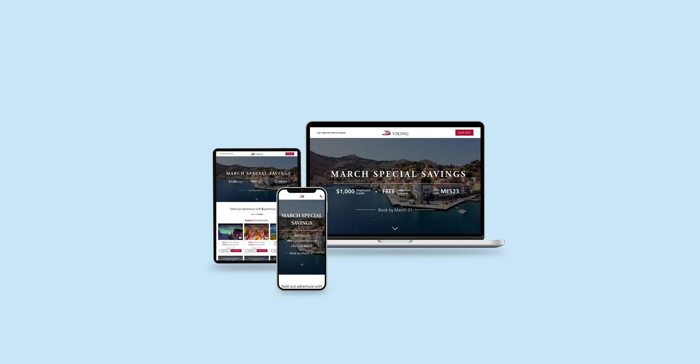
Case Study
Embracing newcomers and welcoming returning explorers
This project aimed to educate users, new and old, about the value of a Viking cruise, while also showcasing the current offerings. For many users, understanding the full cruise experience can be a challenge. This struggle can become even more pronounced for those who are new to a particular brand or have never cruised before, resulting in lower conversion rates. More and more of users are becoming mobile users, so this had to work on all breakpoints.
As the main designer on this project, I had the responsibility of ensuring that the final product was designed to meet all project requirements. I was focused on creating a user-centered design that provided an intuitive and seamless experience to our users. My contribution to the project included conducting user research, creating wireframes, creating final UI designs, and building prototypes.
The current design appears outdated and lacks user appeal, potentially eroding trust. Moreover, the absence of informative content hampers the user's understanding of the Viking cruise experience.
To address these issues, I recommend incorporating genuine customer testimonials for authenticity and showcasing the comprehensive value of Viking's offerings. A visual update can make the page more inviting and user-friendly, aligning with our user-centered design approach.
This holistic strategy aims to establish trust, resonate with users, and drive conversions. By blending content enhancement with visual refinement, we can provide a more engaging user experience and ultimately boost conversion rates.
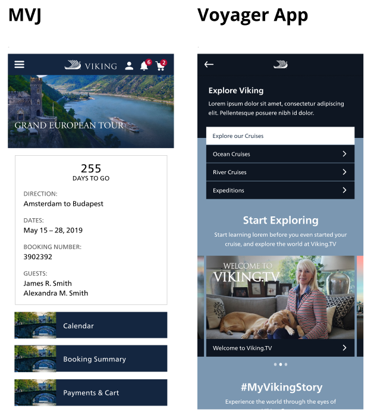
Below you will find a sample of images of my research
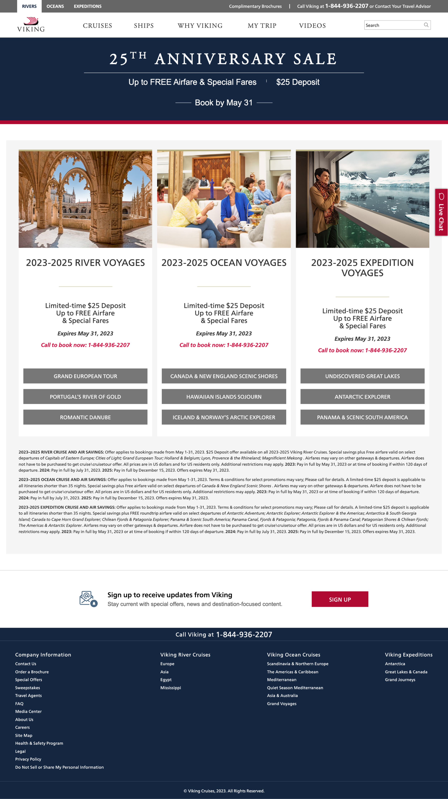
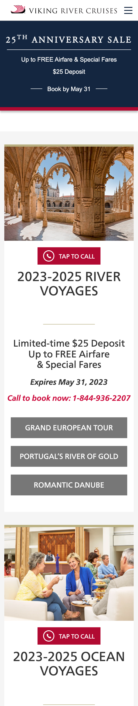
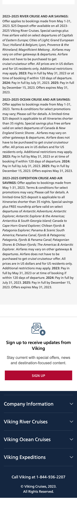
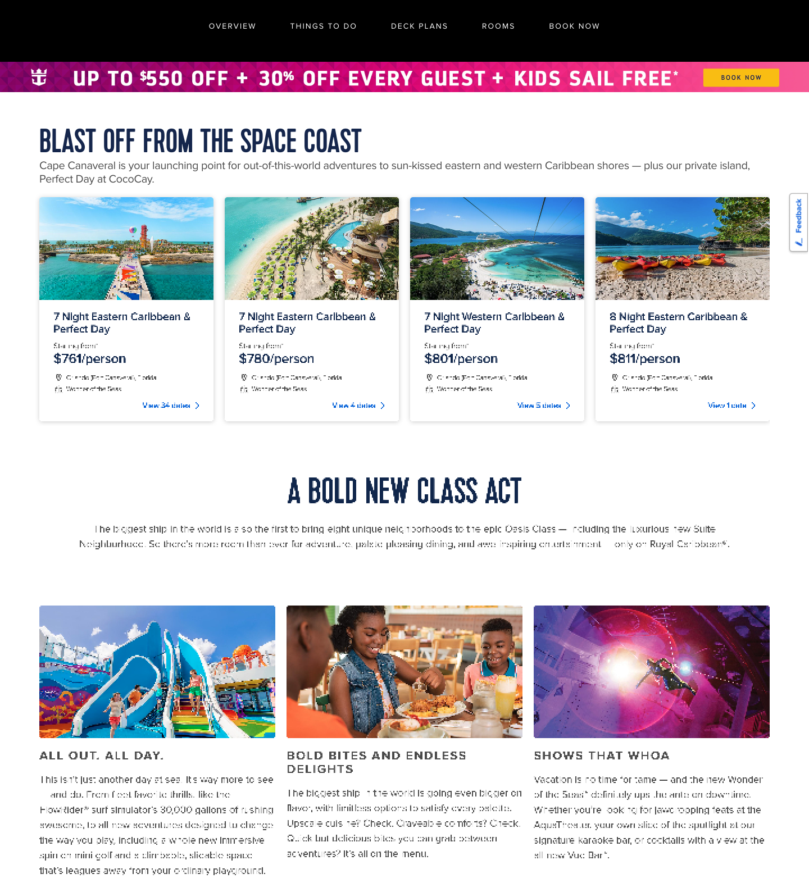
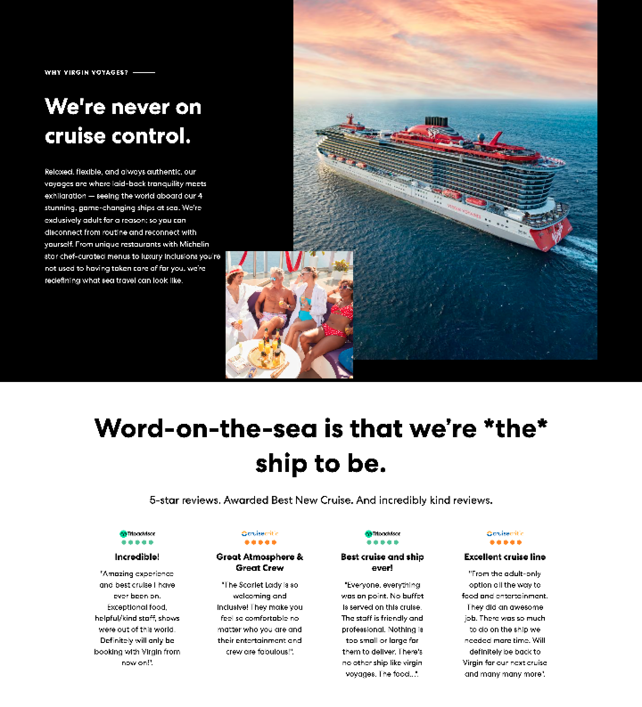
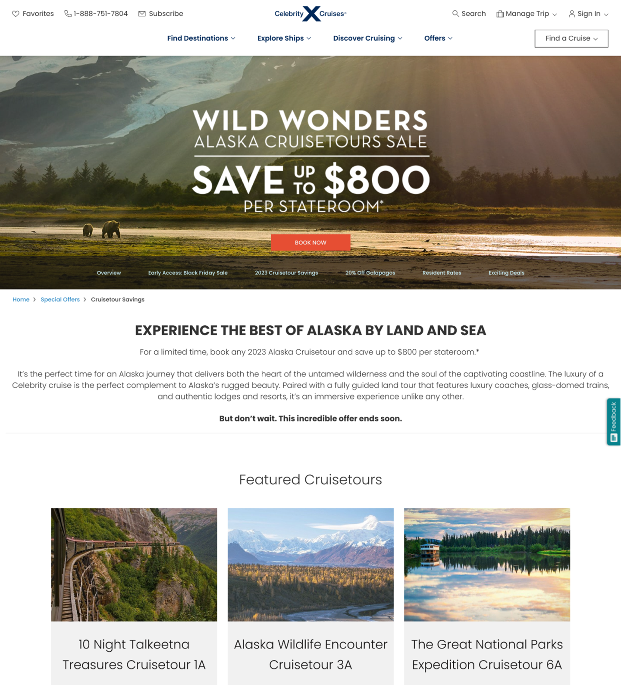
I required a comprehensive understanding of the landing page's functionality, including the destination of the CTAs and the specific content that would be present on this page. Although there were slight deviations from the sitemap in the final design, it served as an incredible north star.
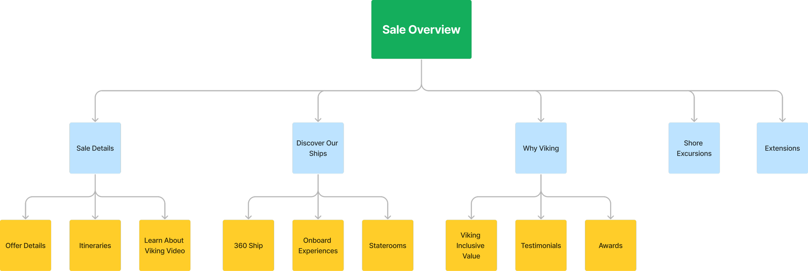
This is the moment when everything starts to click, and we can really envision how the product will come together. It's honestly one of the best parts of the whole process because not only does it help me and the team understand the project better, but it also gives our stakeholders a clearer picture of what we're aiming for. Other than watching users interact with a prototype or a finished product, nothing is more helpful than finally getting to see a visual representation of the project.
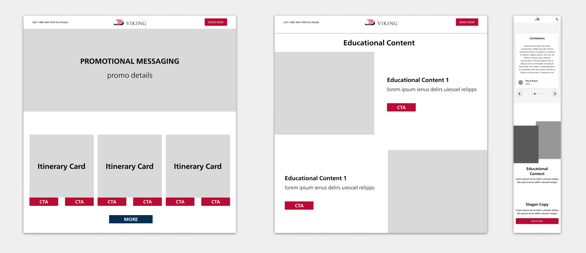
During the low-fidelity mock phase, we were able to iron out some design decisions. We removed some sections, added new ones, and simplified others. An example of this would be the Discover Our Ships section. This area took up too much room and was better left to being on its own separate page. We instead added a highlight about the Viking ships in a different section.
After tinkering with the UX of the landing page, it finally came time to make the high-fidelity version. I used our branding and implemented our design system to create these mocks.
View Figma PrototypeDesktop
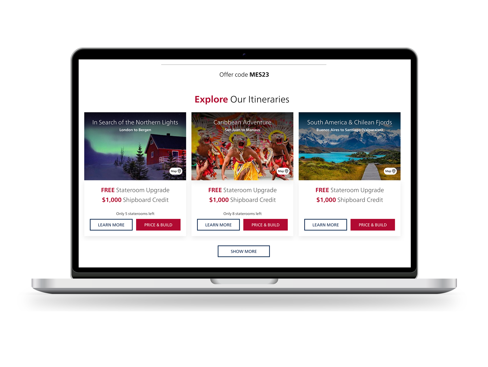
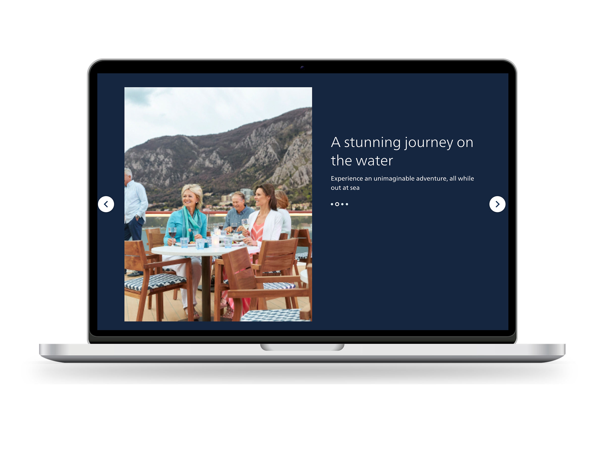
Tablet
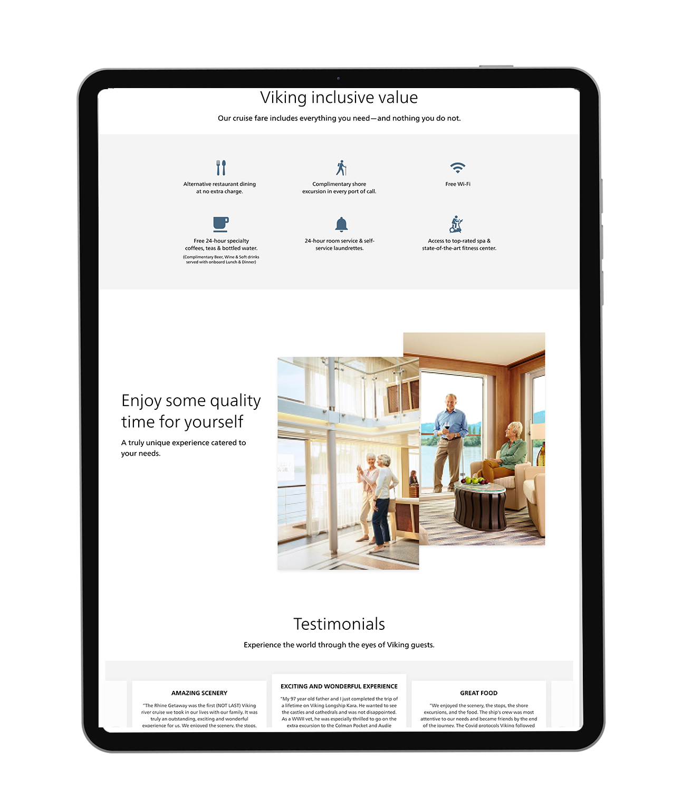
Mobile
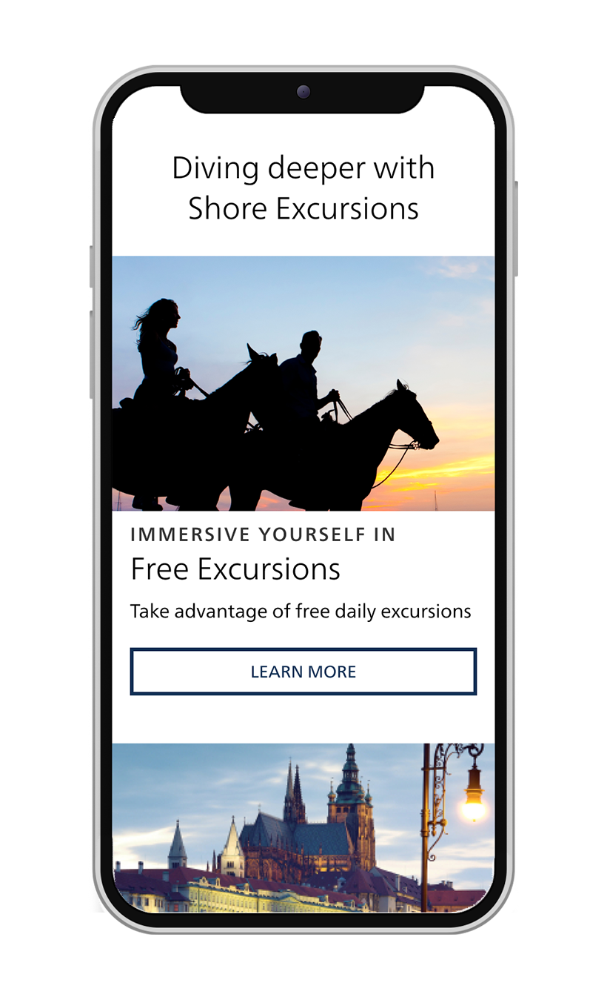
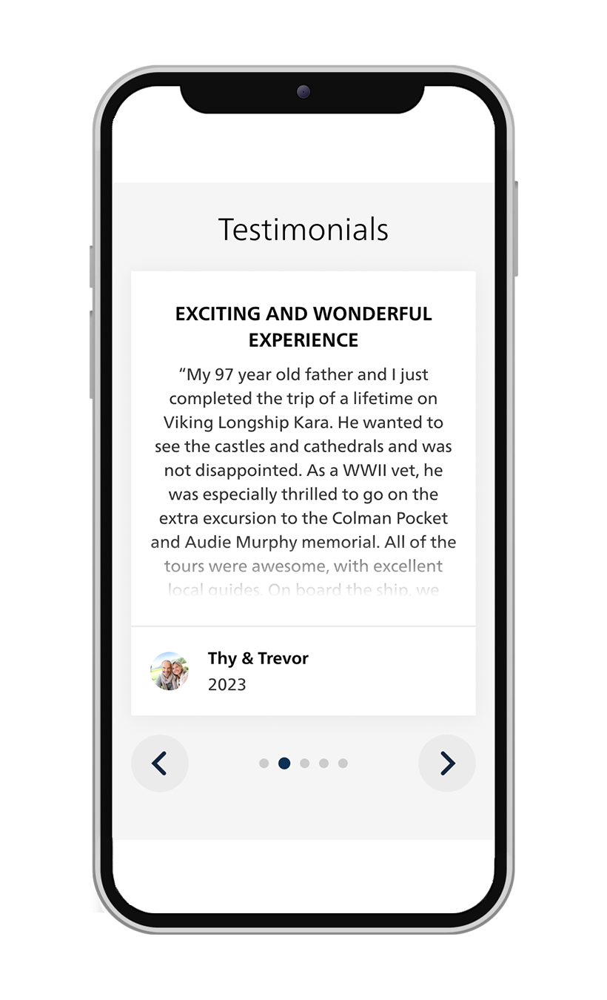
After spending all this time and effort on this experience, we have reached the mark of getting users' eyes on this. I set up a test on Usertesting.com to gather any information that can help us iterate this design before launching. If we can take care of any obstacles now, we won't have to backtrack on development time.
Once I gathered all the research from the user test I changed the design where need be. For instance, the Itinerary Cards had a carousel arrow to the right to view more cruises, but users were missing this UI. So I chose to add a "Show More" CTA button instead.
6. Yay we're done! Launch!
…never that simple huh?
With this new version of the Strategic Tactical Journey Page, users are now getting a full experience. Rather than seeing an outdated website with no context, users instead get educated on the Viking brand, see what the current deal is, and are given a quick view of all itineraries that are available.
Data Points: